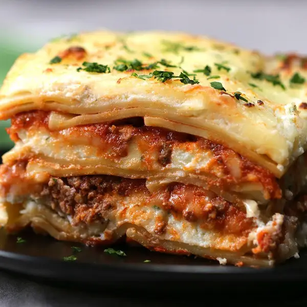

Lasagna

Description
This is a recipe for the best homemade lasagna you could ever dream of
Ingredients
- 1 pound of ground beef, cooked and drained of fat
- 4 cups of marinara sauce
- 4 cups of whole milk ricotta cheese
- 2 cups of grates parmesan cheese
- 2 tablespoons of frash parsley, chopped
- 2 tablespoons of fresh basil, chopped
- 1 teaspoon of kosher salt
- half a teaspoon of freshly ground black pepper
- 2 tablespoons of extra virgin olive oil
- 15 lasagna noodles, cooked according to package instructions
- 3 cups of shredded mozzarella cheese
Steps
- Preheat the oven to 350ºF (180ºC). Grease a 9 x 13-inch (22 x 33 cm) baking dish lightly with nonstick
spray.
- In a large bowl, mix together the ground beef and marinara sauce.
- In a separate large bowl, combine the ricotta, Parmesan, parsley, basil, salt, pepper, and olive oil.
- Spread 1 cup of the meat sauce over the bottom of the prepared baking dish. Top with 5 cooked lasagna
noodles, overlapping as needed to completely cover the sauce. Spread 2 cups of the ricotta mixture over the
noodles. Top with 1 cup of mozzarella cheese. Repeat with the remaining meat sauce, noodles, ricotta, and
mozzarella to make 2 more layers.
- Bake the lasagna for 25-30 minutes, until the cheese is melted and the sauce is bubbling up through the
layers. Turn the broiler to high and broil for 1-2 minutes, until the top layer of cheese is bubbly and
golden brown.
- Let the lasagna cool for 30-45 minutes, then serve.
- Enjoy!